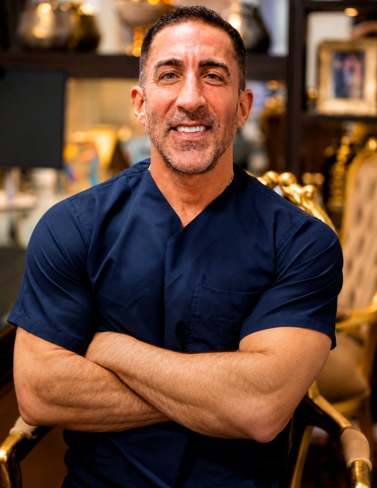
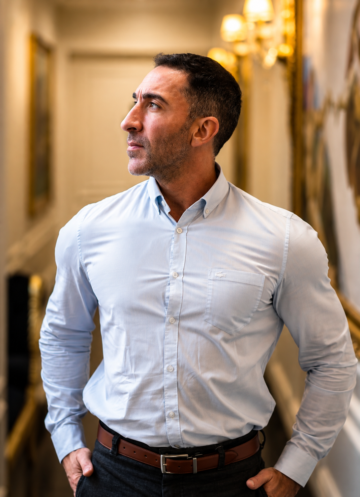

Recupere a leveza do seu rosto sem abrir mão da sua naturalidade.
Cirurgias faciais com planejamento individualizado para valorizar seus traços e preservar suas expressões.
Registro real de resultado cirúrgico com a técnica Deep Plane & Deep Neck.
Rejuvenescimento natural e harmônico com a técnica Deep Plane.
Benefícios do Deep Plane & Deep Neck
- Reposicionamento profundo das estruturas e músculos da face.
- Redefinição do contorno da mandíbula e redução da papada.
- Cicatrizes imperceptíveis, disfarçadas na linha do cabelo e contorno da orelha.
- Procedimento seguro com alta hospitalar rápida (apenas um dia de internação).
Um planejamento.
Diferentes possibilidades.
Face, pescoço e olhos devem ser analisados em conjunto, sem perder de vista o que torna cada rosto único.
Lifting Facial
Deep Plane
Técnica cirúrgica que pode ser considerada para reposicionamento das estruturas faciais profundas e tratamento de determinados sinais de envelhecimento, atuando abaixo da camada muscular sem tracionar excessivamente a pele.
Deep
Neck
Planejamento voltado ao contorno cervical e às estruturas do pescoço, conforme as características anatômicas identificadas na avaliação. Trata glândulas submandibulares, gordura profunda e o músculo platisma.
Blefaroplastia
(Superior e Inferior)
Cirurgia das pálpebras que pode ser indicada para tratar determinadas alterações da região dos olhos após avaliação individual, suavizando o peso palpebral e as bolsas de gordura preservando o olhar autêntico.
O rosto não envelhece em partes isoladas.
Por isso, a avaliação não começa escolhendo um procedimento. Ela começa entendendo anatomia, proporções, alterações faciais e o que realmente incomoda o paciente.
Em alguns casos, procedimentos podem ser associados dentro do mesmo ato cirúrgico para promover harmonia entre o terço médio, a linha mandibular e o pescoço. Em outros, uma abordagem diferente ou mais pontual pode ser a mais adequada.

O que torna o planejamento facial diferente.
A cirurgia facial contemporânea não busca esticar a pele superficialmente, mas sim restaurar as estruturas anatômicas em sua posição original.
ANÁLISE FACIAL
O planejamento começa pelas características e proporções individuais de cada rosto. Analisamos dinâmica muscular, qualidade tecidual, suporte ósseo e a harmonia tridimensional da face.
ESTRATÉGIA CIRÚRGICA
A indicação das técnicas depende da avaliação anatômica e dos objetivos discutidos durante a consulta. Cada plano cirúrgico é customizado com precisão micrométrica para sua anatomia.
ACOMPANHAMENTO
O processo inclui orientações detalhadas de pré-operatório e acompanhamento médico contínuo ao longo de todas as etapas de recuperação previstas para cada procedimento.
Procedimentos que podem fazer parte do planejamento.
Cada intervenção cirúrgica atua sobre planos anatômicos específicos. Conheça as principais técnicas que o Dr. Tiago Prause emprega em seu protocolo de rejuvenescimento facial.
Agendar minha avaliação-
01
Lifting Facial Deep Plane
Atua sob o sistema músculo-aponeurótico superficial (SMAS), liberando os ligamentos retentores da face e permitindo o reposicionamento vertical e anatômico das bochechas, sulcos nasogenianos e contorno mandibular sem tensão cutânea.
-
02
Deep Neck
Tratamento aprofundado do pescoço que aborda as estruturas subplatismatis (abaixo do músculo platisma), atuando em excessos glandulares e adiposos profundos para restaurar a transição nítida entre o queixo e o colo.
-
03
Blefaroplastia Superior
Trata o excesso de pele e pequenas bolsas de gordura nas pálpebras superiores que geram peso ocular e olhar cansado, devolvendo leveza ao terço superior da face sem alterar o desenho natural dos olhos.
-
04
Blefaroplastia Inferior
Focada no reposicionamento ou remoção comedida das bolsas de gordura infraorbitais e no tratamento da flacidez abaixo dos olhos, suavizando a transição entre a pálpebra inferior e a região malar.
-
05
Planejamento Combinado
Quando existe indicação, diferentes abordagens podem ser combinadas dentro de um mesmo planejamento médico, tratando face, pescoço e pálpebras de maneira integrada e equilibrada.

Dr. Tiago Prause
Médico • CRM-SC 17341 • RQE 17614
“Meu objetivo é ajudar as pessoas a chegarem em sua melhor versão.”
Com dedicação voltada à anatomia cirúrgica facial e aos protocolos contemporâneos de rejuvenescimento, o Dr. Tiago Prause conduz cada consulta com tempo, acolhimento e clareza diagnóstica.
Sua filosofia de atendimento no Instituto Prause prioriza a harmonia natural das expressões faciais, compreendendo que a verdadeira sofisticação de uma cirurgia de face está naquilo que não é perceptível como artificial.
Agendar consultaDa primeira conversa ao acompanhamento.
Um processo estruturado com transparência em cada fase, garantindo tranquilidade e previsibilidade ao paciente.
CONSULTA
Entendimento detalhado das queixas, expectativas, estilo de vida e histórico de saúde do paciente em uma conversa aprofundada.
AVALIAÇÃO
Análise minuciosa das características faciais, dinâmica muscular, suporte ósseo e das reais possibilidades de tratamento.
PLANEJAMENTO
Definição da estratégia médica individualizada, alinhamento técnico dos procedimentos necessários e preparo cirúrgico seguro.
ACOMPANHAMENTO
Orientações contínuas e suporte pós-operatório próximo de acordo com cada etapa da recuperação e cicatrização do paciente.
Perguntas que aparecem antes da consulta.
Respostas transparentes e pautadas na ética cirúrgica sobre os procedimentos e a avaliação individual.
Rejuvenescer não precisa significar deixar de parecer
com você.
O primeiro passo é uma avaliação para entender o que mudou, o que incomoda e quais possibilidades podem ser consideradas para o seu caso.